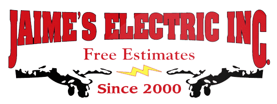
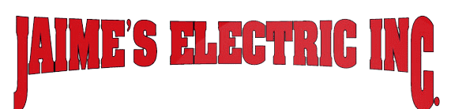
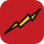

Logo ideas for Jaime’s Electric
The demo site uses Jaime’s own logo. The two new ideas below are optional sketches, just to show what’s possible. They are logo concepts, not Jaime’s Electric’s official logo.

Current logo
Red Western-style lettering with a black outline, two hands passing a yellow spark, “Free Estimates” and “Since 2000.” Recognizable, with real personality.
The one challenge: the full lockup is wide, so on a phone header “Free Estimates” and “Since 2000” become too small to read.
1. Your logo, ready for the web Used on the demo site
Jaime’s real logo, untouched. On the site, the header shows the wordmark row on its own so every letter reads on a phone, and the full logo (hands, spark and “Since 2000”) appears beside the phone number and in the footer, at a size where every word reads.


Lettering, colors, outline, hands, spark and taglines, all exactly as they are.
Only the presentation: a wordmark-only header version cut from the same file, and a favicon built from Jaime’s own spark.
2. Switched On Logo concept
A new symbol from the electrician’s world: a single breaker in the “on” position, in Jaime’s red and spark yellow. A tall, heavy wordmark keeps the old-school sign-painter strength of the current lettering.
The name, Jaime’s red, the spark yellow and the bold, condensed spirit.
New breaker symbol, new display face (Tanker), and the hands are dropped for a simpler mark that works at any size.
3. The Heritage Seal Logo concept
A round “JE” badge built for trucks, shirts and job-site signs, with “Since 2000” front and center. The Western lettering echoes the current logo, so it feels like Jaime’s from the first glance.
The Western lettering style, red, the spark and “Since 2000.”
New round badge shape and a “JE” monogram set in Rye.